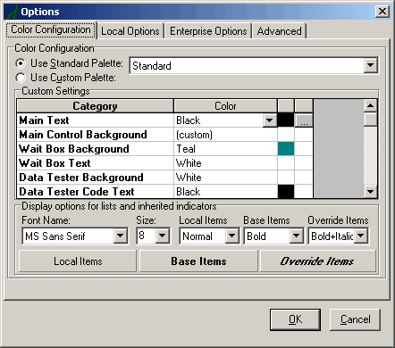

Save Page to .PDF
Save Page to .PDFThe display and behavior of various views in EXAMPLE Author® support the editing of inherited ManuScripts. These views display the logical listing of items in an active ManuScript. When a user modifies a base-defined item in any of the views, that item becomes an override item. If the override item does not exist in the derived ManuScript, the system creates it, places it appropriately in the ManuScript's hierarchy, and marks it as an override entry in the ManuScript XML.
The following sections describe more specifically how EXAMPLE Author® facilitates ManuScript inheritance.
Creating a Derived ManuScript
When you create a new derived ManuScript, you can select the base ManuScripts from which you wish to inherit in EXAMPLE Author®. You can select these base ManuScripts on the Inheritance tab of the ManuScript Properties dialog box (File > Properties). You may select a base ManuScript for field, group, and table data as well as base ManuScripts for pages and forms data, respectively. That is, in addition to inheriting a base ManuScript, you can override (or supersede) an entire section of the inherited base ManuScript with the Page Design or Forms Mapper sections of separate base ManuScripts.
When selecting a base ManuScript, the root group in the active (derived) ManuScript must be identical to the root group in the base ManuScript.
Viewing a ManuScript Inheritance Chain
You can view a ManuScript's inheritance chain in EXAMPLE Author® in two ways:
- On the Inheritance tab of the ManuScript Properties dialog box (File > Properties).
- In the Inheritance dialog box (View > Inheritance).
ManuScript Properties Dialog Box
The Inheritance tab on the ManuScript Properties dialog box (File > Properties) allows users to view and define a ManuScript's inheritance chain. Depending upon the type of inheritance used by a ManuScript, the Inheritance tab may display that ManuScript's inheritance chain in two ways.
- The Inherited ID, Inherited Page ID, and Inherited Form ID fields specify the ManuScripts directly inherited by the derived ManuScript. If a ManuScript's inheritance chain is defined using these fields, that ManuScript only contains information about ManuScripts that are directly inherited. If those inherited ManuScripts are, in turn, derived from other ManuScripts, users must open the inherited ManuScripts to view their inherited ManuScripts. Users must continue opening each ManuScript specified on the Inheritance tab of derived ManuScripts until they reach the bottom of the inheritance chain.
- The Inheritance Maps section specifies the entire inheritance chain for the active ManuScript. If a ManuScript's inheritance chain is defined using this section, that ManuScript contains information about each ManuScript in its inheritance chain. As a result, users can view the entire chain for each type of inheritance (data, pages, and forms) in this section without opening any additional ManuScripts.
Inheritance Dialog Box
The Inheritance dialog box (View > Inheritance) allows users to view an entire ManuScript inheritance chain for each type of inheritance (data, pages, and forms) and, if desired, open any ManuScript in that chain.
Visual Configuration Options
In EXAMPLE Author®, you can use the Options settings to define font name, size, and style of items that can have their attributes edited in EXAMPLE Author®. You can define these items to visually highlight their scope in EXAMPLE Author®. Note the Display options for lists and inherited indicators area of the dialog box below.

Demote/Revert
Inherited items that have been overridden in EXAMPLE Author® can return to the base definition for those items by being demoted/reverted. The demote/revert feature of EXAMPLE Author® follows the granularity rules outlined in Granularity of Inheritance.
Inheritance Rules
Because various items that appear in a derived ManuScript do not always reside in that ManuScript, rules govern the actions you can take on these items. You cannot, for example, rename or move items in a derived ManuScript that reside in the base ManuScript. The following table defines the actions available to users working in a derived ManuScript.
|
Action/Activity | Action Available in Active ManuScript | ||
|---|---|---|---|
| Base-Defined Items | Overridden Items | Locally Defined Items | |
| Modify/Edit | Overrides the item. | Modifies the item. | Allowed |
| Add | n/a | n/a | Allowed |
| Duplicate | Creates the duplicate as a locally defined item. | Creates the duplicate as a locally defined item. | Allowed |
| Delete | Denied | Demotes/reverts the item back to the base definition. Deletes the local override definition. | Allowed |
| Rename | Denied | Denied | Allowed |
| Move (Fields) | Denied | Denied | Allowed |
| Reorder (Pages/Forms) | Allowed. This action creates an abstract local copy that specifies the order in the active ManuScript. | Allowed | Allowed |
View XML
You can view any of three XML displays for an inherited ManuScript in EXAMPLE Author®: Source XML, Logical XML, and Compare XML. Source XML displays the local XML where modifications to the base ManuScript must be made. Logical XML displays the assembled view of the derived ManuScript XML and all sections of base ManuScripts used by the derived ManuScript. Compare XML compares the Logical XML of the derived ManuScript to the Logical XML of the base ManuScript.
Import Restrictions
When importing ManuScripts in EXAMPLE Author®, ManuScripts already inherited by the active ManuScript are excluded from the ManuScript Catalog. This prevents cyclical use of the same material in a single ManuScript.
ManuScript Validation and Inheritance
The ManuScript validation process in EXAMPLE Author® identifies any orphaned override items. During validation, if the active ManuScript contains an item marked as an override, but the item name does not exist in any of the base ManuScripts, an error occurs. The user cannot rename or re-associate the override item with the renamed item in the base. If no associated item exists in the base, the item can be converted to a local definition or deleted.
The validator cannot check to see if an orphaned item is used by an external ManuScript. During the validation process, however, you can instruct the validator to skip a given item in future validations. This function is useful for items detected as orphaned that are used by external ManuScripts.
XML Attributes
The Page Designer and Forms Mapper tools in EXAMPLE Author® create the XML attribute prevPage, which facilitates the ordering of items in a derived ManuScript. Because a derived ManuScript only contains additional or overridden pages in its local XML, it must use the prevPage attribute to correctly order additional and overridden pages with the inherited pages. The prevPage attribute identifies which inherited page the new or overridden page should follow. Thus, this attribute controls where to insert a page in the list of pages.